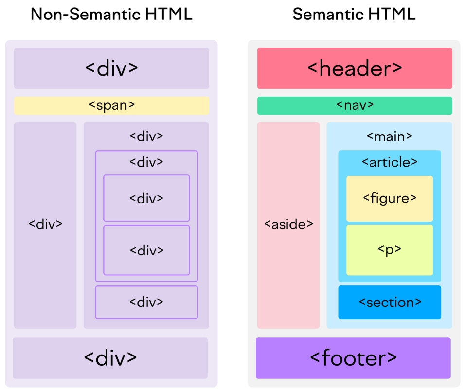

Uma tag semântica tem um significado explicitamente definido tanto para o navegador (e outros sistemas) quanto para o desenvolvedor
Exemplos de tags semânticas:
header, main, aside, article, footer
H1..H6
p
img
ul, ol
a
form
input
O elemento picture

O elemento video
O elemento audio
O que é tag não semântica?
Uma tag não semântica não tem um significado semântico específico, portanto, o conteúdo textual nelas armazenado não passa de "caracteres dispersos".
Tags não semânticas são mais apropriadas para o trabalho com layout e não com texto diretamente.
Exemplos de tags não semânticas:
div
span
hr
strong, b, i, em (polêmica!)
NAV
HEADER
A tag header representa um contêiner para conteúdo introdutório ou um conjunto de links de navegação.
Esta tag normalmente pode conter:
Uma ou mais tags de cabeçalho (h1-h6)
Logotipo ou ícone
Informações de autoria
Nota: Você pode ter vários tags header em um documento HTML. No entanto, header não pode ser utilizado dentro de um footer, address ou outro tag header.
ASIDE
SECTION
O tag section define uma seção em um documento.
De acordo com a documentação HTML do W3C: "Uma seção é um agrupamento temático de conteúdo, geralmente com um cabeçalho."
Exemplos de usos:
Capítulos
Introdução
Novos itens
Informações de contato
ARTICLE
A tag article especifica conteúdo independente, importânte, e atômico.
O "artigo" deve fazer sentido por si só e deve ser possível distribuí-lo independentemente do restante do site.
Exemplos de onde o tag article pode ser usado:
Produto específico
Postagens de fórum
Postagens de blog
Comentários de usuário
Artigos de jornal
MAIN
A tag main especifica o conteúdo principal de um documento.
O conteúdo dentro do elemento principal deve ser exclusivo do documento. Ele não deve conter nenhum conteúdo repetido em documentos, como barras laterais, links de navegação, informações de direitos autorais, logotipos de sites e formulários de pesquisa.
Nota: Não deve haver mais de um elemento principal em um documento. O elemento principal NÃO deve ser descendente de um article, aside, footer, header ou nav.